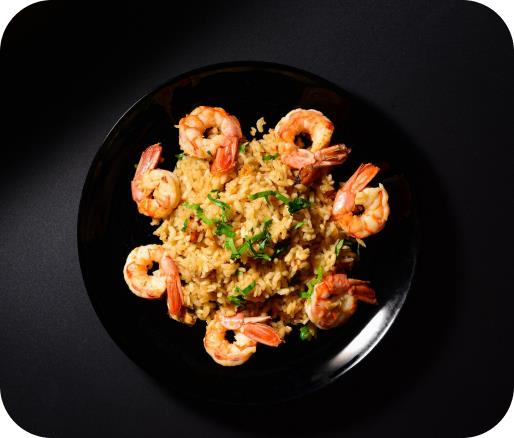
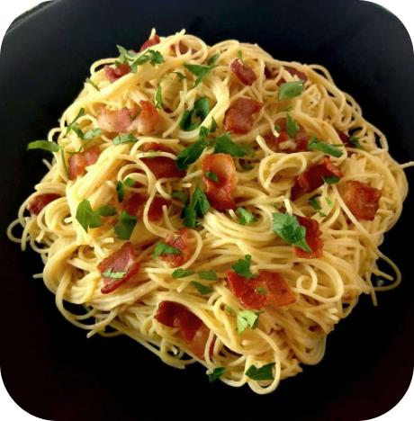
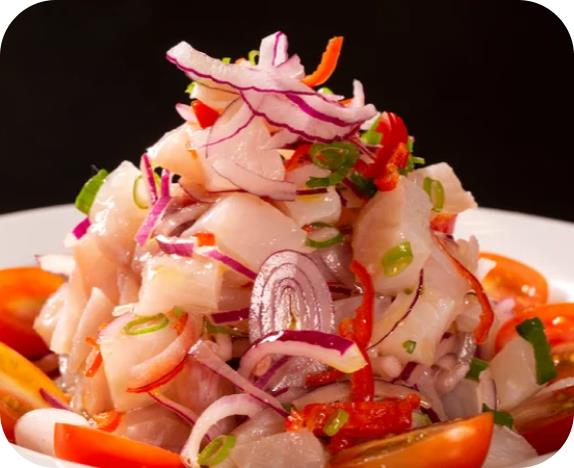
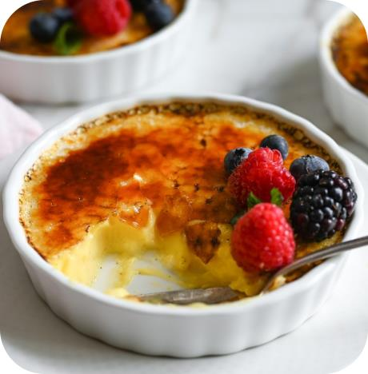

Chefs: Helena Rizzo e Olivier Anquier
O Risoto de Camarão é um prato romântico e requintado que combina camarões suculentos com arroz Arborio cremoso. O aroma sedutor e os sabores deliciosos se unem para criar uma experiência culinária memorável, perfeita para momentos românticos e especiais.
O Carbonara é um prato italiano clássico e romântico. Com seu molho sedutor feito de gemas de ovo, queijo parmesão derretido e pedaços de pancetta crocante, cada garfada é uma explosão de sabores intensos e apaixonantes. A combinação perfeita de ingredientes cria uma textura cremosa e um equilíbrio de salgado e suave que derrete o coração e encanta o paladar.
O Ceviche é um prato refrescante e cheio de sabor. Com peixe ou frutos do mar marinados em suco cítrico, é uma opção leve e deliciosa para aproveitar momentos especiais. Seu frescor e equilíbrio de sabores o tornam uma escolha perfeita para desfrutar de uma refeição romântica e leve.
O Crème Brûlée é uma sobremesa elegante e sedutora. Com sua textura cremosa e camada crocante de açúcar caramelizado, cada colherada é uma explosão de sabor. O aroma de baunilha envolve os sentidos, criando uma experiência íntima e inesquecível. O Crème Brûlée é perfeito para uma sobremesa romântica e luxuosa, capaz de encantar os corações apaixonados.
